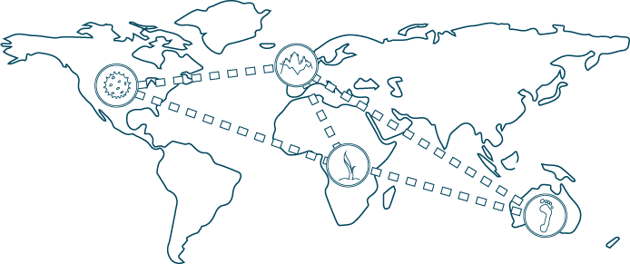

GRSciColl
Registry Objectives
Improve access to information about scientific collections.
Improve interoperability among collections and digital data by providing unique identifiers.
NEW PUBLICATION! A call for community curation of the Global Registries of Scientific Collections
The Registry
GRSciColl, the Global Registry of Scientific Collections, is a comprehensive clearinghouse of information about object-based scientific collections. Designed to be truly interdisciplinary, GRSciColl includes and accepts data on institutions and collections that span all scientific disciplines, including earth and space sciences, anthropology, archaeology, biology, biomedicine, and applied fields, such as agriculture, veterinary medicine, and technology.
GRSciColl provides increased discoverability for collections beyond traditional disciplinary boundaries and illustrates the importance and uniqueness of each collection as part of the collective resource. Specifically, it captures information about collections, the institutions that hold and support them, and the staff that maintain them.
The Curation
As a community-curated data source, content on institutions, collections, and personnel in GRSciColl is provided by individuals. After initial registration, only periodic reviews and updates are required as staff changes or collections are moved or consolidated. All information entered is reviewed by administrative moderators, and all changes are approved by the local personnel who are affiliated with the record.
The Collections Community
GRSciColl is committed to serving the community that manages and uses scientific collections. The broad scope of types of collections, disciplines, and jurisdictions presents a monumental challenge to amassing all the pertinent information.
We are delighted to be working in close collaboration with a number of other registries, specimen/sample locators, professional societies, and other organizations to ensure that GRSciColl contains the most current information and minimizes the effort required by each contributor.
SPNHC
Society for the Preservation of Natural History Collections (SPNHC) is an international society whose mission is to improve the preservation, conservation and management of natural history collections to ensure their continuing value to society. We are working together so that SPNHC members are knowledgeable about GRSciColl, the information it contains, and how to keep data on their collections up to date.
iDigBio
iDigBio (Integrated Digitized Biocollections) is the U.S. national resource for digitized information about vouchered natural history collections. We are working together to make certain registered institution and collection codes are commonplace as collections digitize their specimens. Ensuring uniqueness of these codes prior to the beginning of a digitization effort improves information traceability and future interoperability between collections. With GRSciColl as the preferred registry for iDigBio projects, we are assuring a more complete database and an immediate use of the services provided.
CETAF
CETAF (Consortium of European Taxonomic Facilities) is a network of European natural history museums, natural science museums, botanical gardens, and other research institutions dedicated to the preservation of collections and the promotion of scientific research. We are working together so that CETAF members are knowledgeable about the resource GRSciColl provides and that the collections CETAF represents are easily discoverable for new research and collaborations.